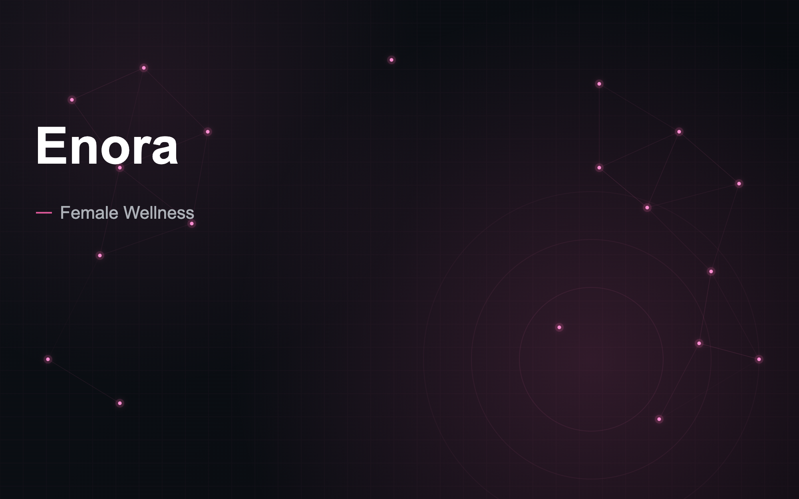

Daily emotional check-ins
A simple flow for users to log how they feel without needing to write a full journal entry.

Female Wellness · AI · Mobile
A postpartum wellness concept that helps new mothers reflect on their emotions, track mood patterns, and feel supported through gentle journaling, guided check-ins, and AI-supported reflection.
Overview
AI-assisted emotional wellness for postpartum and early motherhood.
Enora is a mobile wellness concept designed for mothers navigating postpartum life, emotional overwhelm, identity shifts, and the everyday mental load of caregiving.
The product started as Thessa and evolved into Enora, a softer and more focused experience built around reflection, emotional tracking, and AI-guided support. The goal was not to replace therapy or medical care, but to create a private, low-pressure space where mothers could check in with themselves, notice patterns, and feel less alone.
The problem
Postpartum support often disappears after the baby arrives.
New mothers are expected to recover physically, manage feeding, sleep, childcare, household responsibilities, relationship changes, and emotional shifts, often while feeling isolated or unsure if what they are experiencing is “normal.”
Many wellness apps feel too broad, too clinical, or too demanding. For a postpartum user, even opening an app can feel like another task.
How can an emotional wellness app feel gentle enough to use when someone is overwhelmed, tired, or barely holding it together?
Product direction
Enora focuses on small, emotionally safe interactions instead of heavy tracking. The experience centers around quick daily check-ins, guided journaling, mood patterns, calming prompts, and AI-supported reflection, intentionally quiet, soft, and private, with an emphasis on helping users name what they feel without judgment.
A simple flow for users to log how they feel without needing to write a full journal entry.
Personalized prompts that help users unpack emotions, identify recurring stressors, and reflect with more clarity.
A lightweight way to see emotional trends over time without turning wellness into a data-heavy dashboard.
Short meditations, grounding exercises, and reflective prompts designed for postpartum moments.
A calm, personal area where users can write freely and revisit past entries.
Design approach
The design needed to feel warm, safe, and emotionally grounded.
I avoided a clinical health app look and instead created a softer wellness experience with gentle colors, spacious layouts, low-friction interactions, and supportive language. Every screen was designed to reduce pressure and make the user feel like they could engage for 30 seconds or several minutes.
The tone of the product was especially important. Enora needed to feel supportive without being cheesy, personal without being invasive, and intelligent without feeling robotic.
AI exploration
Enora explores how AI can support emotional reflection in a careful and human-centered way. The AI experience is designed to help users make sense of their thoughts, generate gentle prompts, summarize emotional patterns, and offer grounding suggestions.
The role of AI is intentionally limited to reflection and support, not diagnosis or medical advice.
This made the product an opportunity to think through safety, trust, emotional tone, and boundaries inside an AI-powered wellness experience.
My role
I led the product concept, UX strategy, visual direction, and mobile experience.
Outcome
Enora became part of my broader exploration into AI-assisted consumer products, especially products that combine emotional intelligence, mobile UX, and real-life user needs.
It helped me explore how AI can be used in sensitive spaces where trust, privacy, tone, and simplicity matter just as much as functionality.
Enora is where I bring product strategy, wellness UX, and AI design together around a deeply personal moment in life. Want a closer look at the flows and AI experience behind it?